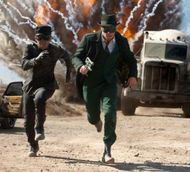

Nouse Film Awards Site 2010/11
News More »
Unlawful Killing: The Film the British Won’t Get To See
Aside from the speculation surrounding the films in the running to win the Palme d’Or, a documentary from British film maker Keith Allen, entitled Unlawful Killing has certainly ruffled a few feathers.
Comment More »
Character Stereotypes at the Academy Awards
Michael Allard investigates what sort of roles are being nominated for Oscars in 2011
Features More »
Cannes 2011: Sun Sea and …Anti-Semitism?
Winner of the coveted Palme d’Or this year is Terrence Malick’s long-awaited The Tree of Life, a movie which has garnered critical acclaim since its screening six days ago at the festival.
-
Our Round-up of the winners and losers at this year's British Academy Film Awards http://t.co/5QVYoLY5 #EEBAFTAs 11:45 AM, Feb 11th 2013
-
And on that bombshell, it's all over. Til next time. AT & MO signing out. 11:03 PM, Feb 10th 2013
-
AT: Stephen Fry: "I don't think I've had that much fun without the use of a water-soluble lubricant." What? How did that just happen. 10:59 PM, Feb 10th 2013
-
AT: Pretty depressing use of "The End" at the end of Sir Alan Parker's Fellowship montage. Nice and subtle BAFTA, nice and subtle. 10:56 PM, Feb 10th 2013
-
RT @EleanorHoppe: I've loved the @BAFTAs tonight but it really is such a sausage-fest. Where are all the female directors and producers? 10:53 PM, Feb 10th 2013
- Follow @nousefilm on Twitter
Trailers
In Pictures...
11 Most Anticipated Films of 2011
Comments
- I agree on Oscars 2013: Sky’s the Limit - Why the Academy Awards refuse to go near 007: With Ben Woodman, Daniel Day-Lewis has now won bot...
- Ben Woodman on Oscars 2013: Sky’s the Limit - Why the Academy Awards refuse to go near 007: I'm sorry, does the end of the article imply that ...
- David Knowles on Oscars 2013: Sky’s the Limit - Why the Academy Awards refuse to go near 007: Well at least Daniel Craig storming for the Oscars...
BAFTA: 2011’s Winners
Following its success at the Golden Globes The King’s Speech emerges from this year’s BAFTA ceremony with a royal flush
Oscar Nominations 2011
Following its 14 BAFTA, and 7 Golden Globe nominations The King’s Speech tops the pack at this years’ Oscar nominations, clocking a total of 12.
Golden Globe Awards announced
It truly is Colin Firth’s time as, in the first stage of the big three awards ceremonies, he has taken home the award for Best Actor
 The BAFTAs 2011 – Live
The BAFTAs 2011 – Live Character Stereotypes at the Academy Awards
Character Stereotypes at the Academy Awards